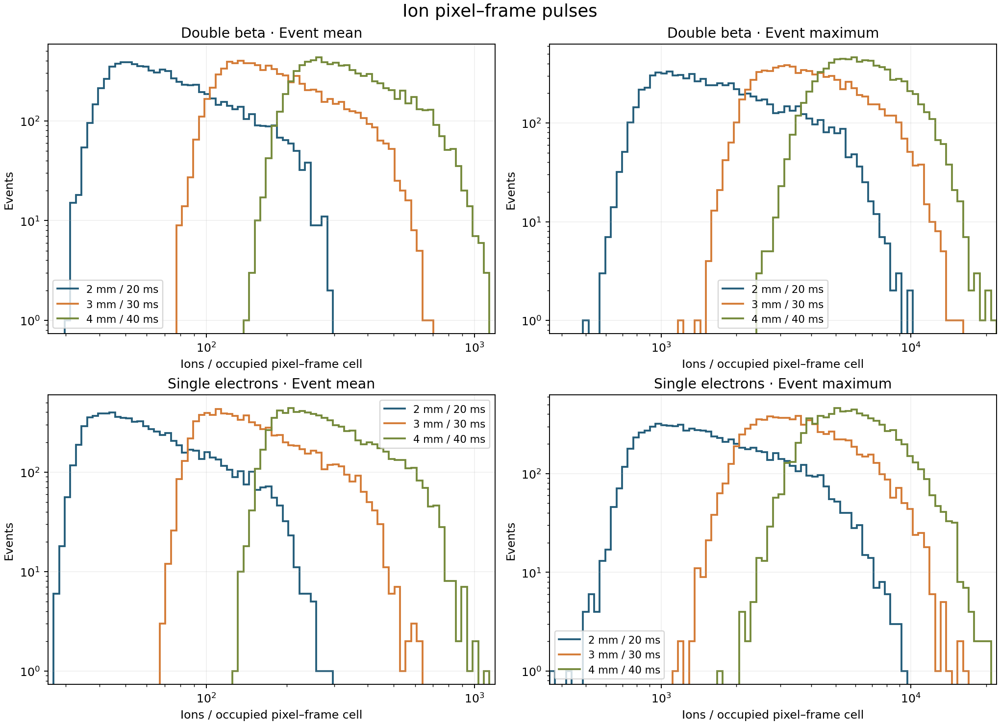
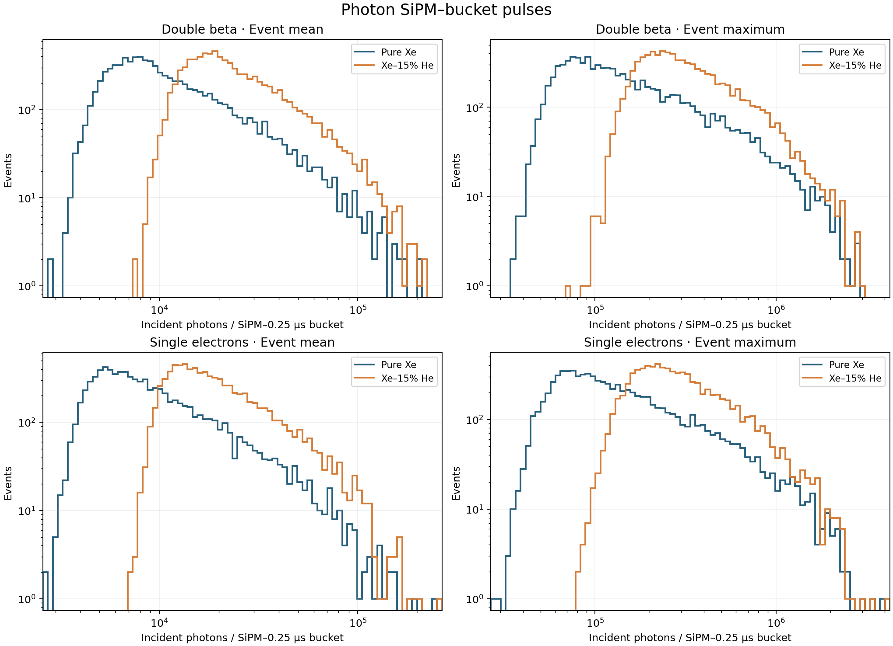

The 1 mm Geant4 source samples contribute 8,000 events each. The same Fano-sampled primary pairs and event placement feed all branches. W = 21.90 eV, F = 0.150; electron lifetime = 15.0 ms, E/P = 3.0 kV/cm/bar, J = 0.010. All occupied cells and all events with pulses enter the distributions; no count cut is applied. Carriers were sampled directly into physical readout cells, with no diffusion-histogram truncation. No time-integrated pixel or SiPM charge enters these plots. The ion and photon ledgers are exact against their saved histories.
An ion pulse is one pixel–frame cell with positive ion count. The three ion grids use 2, 3 and 4 mm transverse pitch and 20, 30 and 40 ms frames, respectively, corresponding to 2, 3 and 4 mm along drift. Every event mean is its total ions divided by its number of occupied pixel–frame cells; the event maximum is the largest cell count.
| Species | Setting | Events | Occupied cells | Total signal | Mean of means | Median mean | Mean maximum | Median maximum |
|---|---|---|---|---|---|---|---|---|
| Double beta | 2 mm / 20 ms | 8,000 | 13,474,452 | 897,306,359 | 81.89 | 67.21 | 2,027.4 | 1,570.0 |
| Double beta | 3 mm / 30 ms | 8,000 | 5,326,135 | 897,306,359 | 200.25 | 170.58 | 4,342.7 | 3,787.0 |
| Double beta | 4 mm / 40 ms | 8,000 | 2,828,841 | 897,306,359 | 367.58 | 321.51 | 6,759.6 | 6,245.0 |
| Single electrons | 2 mm / 20 ms | 8,000 | 16,024,040 | 897,244,198 | 69.01 | 55.72 | 1,881.9 | 1,461.0 |
| Single electrons | 3 mm / 30 ms | 8,000 | 6,386,831 | 897,244,198 | 167.14 | 140.46 | 4,007.4 | 3,475.5 |
| Single electrons | 4 mm / 40 ms | 8,000 | 3,412,957 | 897,244,198 | 304.33 | 264.11 | 6,236.0 | 5,722.0 |

A photon pulse is one SiPM–0.25 µs (250 ns) bucket with positive incident VUV photon count. Pure Xe and Xe–15% He use the same 10 mm hole pitch and electron settings. Every event mean divides its total incident photons by its occupied SiPM–bucket count; the event maximum is the largest bucket count. These are incident photons before SiPM PDE and electronics.
| Species | Setting | Events | Occupied cells | Total signal | Mean of means | Median mean | Mean maximum | Median maximum |
|---|---|---|---|---|---|---|---|---|
| Double beta | Pure Xe | 8,000 | 41,729,458 | 381,689,031,793 | 13,944.03 | 9,124.57 | 208,350.4 | 118,787.0 |
| Double beta | Xe–15% He | 8,000 | 17,838,016 | 375,318,926,831 | 27,735.57 | 20,890.06 | 382,535.6 | 285,552.0 |
| Single electrons | Pure Xe | 8,000 | 50,220,521 | 381,740,368,430 | 11,559.64 | 7,559.79 | 197,679.1 | 111,555.0 |
| Single electrons | Xe–15% He | 8,000 | 21,662,478 | 375,369,610,548 | 22,867.47 | 17,111.54 | 357,864.0 | 265,750.0 |

Numerical HDF5 reduction: /Users/jjgomezcadenas/Projects/NAUSICAA/results/readout_pulses_8000/readout_pulses.h5. Ion grid-scan index SHA-256: d4b5dff3a6245dba45e02227e7e13c6a54fceb83609efeb6124c9e5f30336663. Electron 250 ns index SHA-256: 4978bb6152110d026c17ba7b5d1547d495d4a8fac948ffcb2e87b3d71a5c45b5. Ion run ID: 238ddc5a75e0fd9b; electron run ID: 464425eac32a2c34. The HDF5 reduction records each branch file, source and code identity, per-event pulse totals and shared histogram edges.